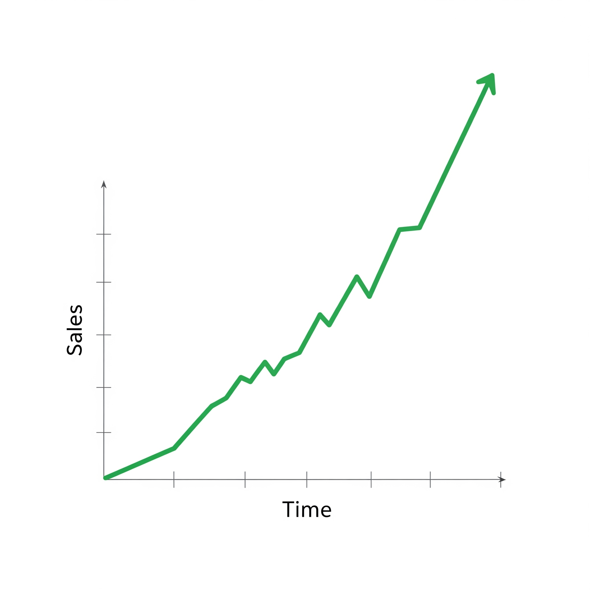

São Paulo, SP — Para milhões de pequenos empresários no Brasil, o som de uma notificação do WhatsApp é uma mistura de esperança e ansiedade. Esperança de uma nova venda, e a ansiedade de não conseguir responder a tempo, perder o cliente para um concorrente ou simplesmente não dar conta do volume de mensagens que chegam após o horário de trabalho.
Um estudo recente de uma consultoria de marketing digital revelou que mais de 68% das oportunidades de venda via WhatsApp são perdidas por demorar na primeira resposta.
Mas uma nova onda tecnológica, antes vista apenas em filmes de ficção científica, está mudando drasticamente esse cenário. Trata-se da "clonagem" do atendimento por meio de Inteligência Artificial, uma forma de treinar um robô para conversar, negociar e vender exatamente como você faria, para que de forma instantânea e incansável.
A Revolução do Atendimento 24/7
A tecnologia, que combina o poder do ChatGPT-4 da OpenAI com o Gemini do Google, permite criar um "vendedor digital" que não dorme, não tira férias e nunca se cansa. Ele pode ser treinado com todas as informações dos seus produtos, serviços, agenda e respostas para as perguntas mais frequentes.
São 23h de um sábado e um cliente vê seu anúncio. Ele chama no WhatsApp e, em menos de 3 segundos, recebe um atendimento completo, tira todas as dúvidas sobre o produto, agenda uma demonstração para segunda-feira às 9h e recebe o link para pagamento. Tudo isso enquanto você está descansando com sua família.

O Fim das Mensalidades Abusivas
Uma dessas ferramentas que tem chamado a atenção é o FacilitaGPT. Diferente de outras soluções no mercado que cobram mensalidades recorrentes, a plataforma oferece acesso vitalício por um pagamento único.
Além de automatizar as vendas, a ferramenta ainda oferece uma oportunidade extra: o direito de revenda. Ou seja, os usuários não só podem otimizar seus próprios negócios, como também podem vender a tecnologia para outros empresários, criando uma nova fonte de renda.
Com uma taxa de satisfação de 98,7% entre seus usuários, a era do "perdido por falta de resposta" parece estar chegando ao fim. A pergunta não é mais se as empresas vão usar IA no atendimento, mas quando. E para quem começar agora, a vantagem competitiva será imensa.
🚀 Não Perca Mais Nenhuma Venda!
Descubra como você pode "clonar" seu atendimento e transformar seu WhatsApp em uma máquina de vendas 24/7
📱 CLIQUE AQUI PARA DESCOBRIR COMO "CLONAR" SEU ATENDIMENTO⚡ Acesso vitalício • Sem mensalidades • Suporte completo